Anthropic vient de lancer Claude Cowork et si vous êtes un peu comme moi, vous essayez encore de comprendre à quoi cet outil sert vraiment. Si vous étiez intimidé par Claude Code, en pensant qu'il faut être développeur pour l'utiliser, cela change tout. J'ai donc invité mon ami Saman, qui est un utilisateur expert de Claude Code, pour décortiquer tout ça et me montrer l'astuce de développement d'une compétence qui transforme Claude en un assistant personnel capable de faire presque n'importe quoi.
Interface & Outils : Terminal de commandes CLI, interface de développement.
Contenu textuel & Code : Lignes de commande Bash, installation de packages npm (Jest, React Testing Library), messages d'interaction avec l'utilisateur.
Action / Démonstration : Exécution d'une commande d'installation et affichage de l'invite de confirmation dans l'outil de développement.
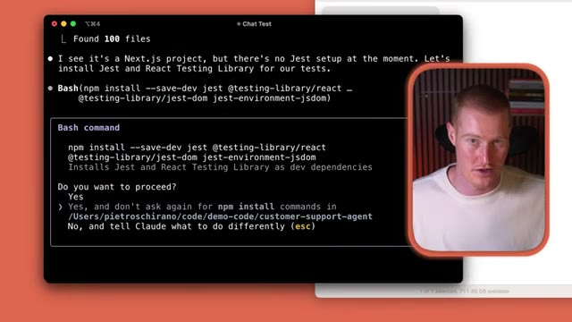
🔍 AgrandirNous parlons de contrôler votre navigateur, de vous connecter à vos applications, de créer des présentations, des documents, etc. À la fin de cette vidéo, vous saurez exactement comment commencer à utiliser Claude Cowork mieux que 99 % des gens qui viennent de l'ouvrir pour la première fois. Alors, sans plus attendre, plongeons directement dans cet épisode. Très bien, comment ça va les gars ? Salman, je suis ravi de t'accueillir, mon vieux. Tu es un utilisateur avancé de Claude Code à mes yeux, donc je suis impatient de découvrir ce qu'est Claude Cowork.
Interface & Outils : Interface utilisateur web générique / application de prise de notes.
Contenu textuel & Code : Options de résumé textuel avec les choix 'Quick summary' et 'Detailed notes'.
Action / Démonstration : Présentation des fonctionnalités de résumé et de configuration de niveau de détail de l'IA.
Et j'espère qu'à la fin de cette vidéo, mon audience sera parfaitement au fait de la manière exacte dont elle peut commencer à l'utiliser si elle est intimidée par l'utilisation de Claude Code. Juste ici, nous avons cette publication sur Twitter d'Anthropic. C'est leur vidéo de sortie de Claude Cowork, qui est sortie hier et qui enflamme Internet. Alors allons-y et parlons de ce qu'est Claude Cowork, comparons-le à Claude Code, et commençons à imaginer quelques cas d'usage différents que nous pourrions commencer à appliquer dès maintenant avec lui.
Interface & Outils : Navigateur web / application de visioconférence (type Zoom ou Google Meet).
Contenu textuel & Code : Publication Twitter floue d'Anthropic relative à Claude Code.
Action / Démonstration : Le présentateur présente et commente une publication sur les réseaux sociaux concernant Claude Code.
Donc Anthropic a sorti beaucoup de choses vraiment cool récemment. Et ça devient un peu vraiment confus de savoir quand vous devriez utiliser quel outil, n'est-ce pas ? J'aime vraiment utiliser cette analogie pour expliquer aux gens comment vous devriez envisager ce genre de sorties. Donc normalement, la première chose avec laquelle vous voulez commencer si vous débutez tout juste, c'est Claude Desktop.
Interface & Outils : Navigateur web affichant le tableau blanc Miro et fenêtres de visioconférence des intervenants.
Contenu textuel & Code : Schéma comparatif illustré avec les personnages de Pokémon (Salamèche, Reptincel, Dracaufeu) associés aux outils d'Anthropic (Claude Desktop, Claude Cowork, Claude Code).
Action / Démonstration : Le présentateur explique les différences entre les différents outils d'Anthropic à l'aide d'une analogie visuelle.
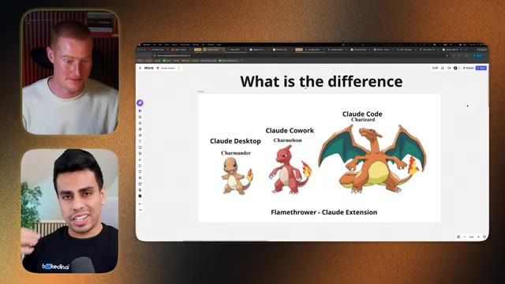
🔍 AgrandirVous pouvez faire cela en allant simplement sur Cloud AI ou n'importe quoi d'autre, et ensuite vous pouvez simplement lui parler comme à ChatGPT. Et je suis un très grand fan de Pokémon, alors j'utilise cette petite analogie Pokémon pour vous montrer. Et imaginez cela comme le niveau d'utilisateur avancé que vous êtes. Très bien. Donc, Claude Desktop est fondamentalement quelque chose d'autonome. C'est un chatbot IA. Vous pouvez lui donner quelques pouvoirs ici et là avec des connecteurs, mais en général les gens ne font pas ça. Et il a un contexte limité de ce que vous essayez de faire. Ce qui s'est passé récemment, c'est qu'Anthropic a lancé ceci
Interface & Outils : Navigateur web affichant une application de tableau blanc interactif (Miro) et une interface de visioconférence.
Contenu textuel & Code : Schéma comparatif titré "What is the difference" montrant l'évolution de Claude via les Pokémon : Claude Desktop (Charmander), Claude Cowork (Charmeleon), et Claude Code (Charizard).
Action / Démonstration : Le présentateur explique les différents niveaux d'interaction avec l'IA en utilisant une analogie Pokémon visuelle.
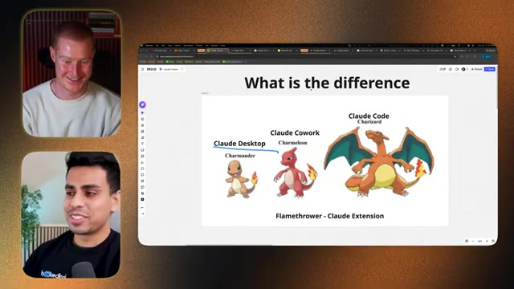
🔍 Agrandirchose appelée Claude Cowork. Et Claude Cowork a essentiellement accès à vos fichiers. Il peut contrôler votre navigateur avec cette extension vraiment cool qu'on vous montrera plus tard dans la vidéo. Et il peut essentiellement être un agent pour vous et considérez-le comme une paire de mains supplémentaire. Mais avec cela vient un tout petit peu plus de complexité ajoutée, mais ce n'est pas si énorme que ça.
Interface & Outils : Navigateur web affichant un tableau blanc Miro avec des illustrations de Pokémon.
Contenu textuel & Code : Texte « What is the difference » et comparaison visuelle utilisant les évolutions de Pokémon pour illustrer les différents outils Claude (Desktop, Cowork, Code).
Action / Démonstration : Le présentateur explique les différences de capacités entre les différentes versions de Claude à l'aide d'une analogie Pokémon.
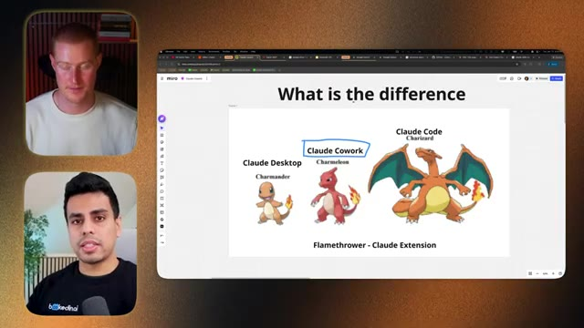
🔍 AgrandirDonc si vous apprenez juste quelques petites choses, vous devriez être capable d'en profiter. Et à l'opposé, là où vous voulez passer en mode super utilisateur, c'est là qu'on utilise Claude Code. Et c'est ce que j'envisage comme un Dracaufeu pour ainsi dire, où il peut faire plusieurs choses différentes. Il peut courir, voler partout pour toujours, de manière autonome pendant des jours.
Interface & Outils : Navigateur web affichant un tableau blanc Miro avec des illustrations de Pokémon et du texte.
Contenu textuel & Code : Texte « What is the difference » et comparaison visuelle des versions : Claude Desktop (Charmander), Claude Cowork (Charmeleon), et Claude Code (Charizard).
Action / Démonstration : Le présentateur explique les différents niveaux d'utilisation de Claude en utilisant une analogie avec l'évolution des Pokémon.
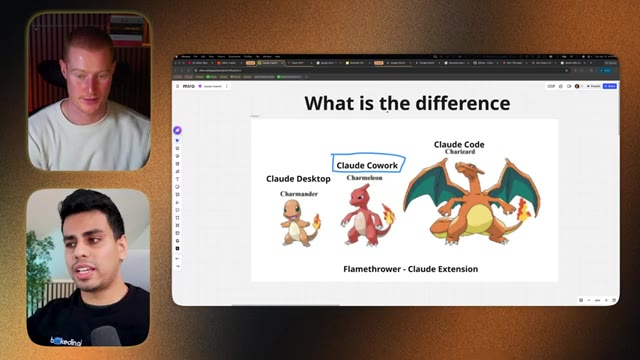
🔍 AgrandirEt, vous savez, cela fait tout simplement qu'à sa tête. C'est donc ça la différence. Mais je pense que pour la plupart des professionnels qui nous écoutent, Anthropic a créé ce Claude Cowork. Donc, tous ceux qui ne sont pas techniques peuvent simplement aller sur une application très simple où vous avez juste une boîte de réception de chat et faire tout votre travail. Cela clarifie définitivement le genre de choses pour lesquelles nous utiliserions cela, parce que je suppose que pour mon audience, ils ont probablement entendu parler de Claude Cowork, ont vu Claude Cowork.
Interface & Outils : Tableau blanc Miro et double vue webcam des intervenants.
Contenu textuel & Code : Texte et illustrations des évolutions de Pokémon représentant les différentes versions de Claude (Desktop, Cowork, Code).
Action / Démonstration : Présentation de l'analogie visuelle pour expliquer les différences de complexité et de puissance entre les versions de Claude.
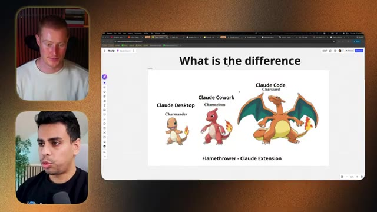
🔍 AgrandirCloud Code, vous interagissez dans, genre, un terminal ou un EDI où vous faites réellement du codage. Donc si vous n'êtes pas un developpeur, parfois cela peut être un peu intimidant. Au lieu de cela, c'est presque comme utiliser Claude comme si vous utilisiez Claude sur le web, si vous êtes juste sur claude.ai et que vous interagissez avec comme si c'était ChatGPT. Mais l'interface a l'air un peu différente et juste pas aussi complexe que Cloud Code.
Interface & Outils : Navigateur web affichant une application de tableau blanc (Miro) et une visioconférence avec deux participants à l'écran.
Contenu textuel & Code : Schéma explicatif titré "What is the difference" avec les analogies Pokémon : Claude Desktop (Charmander), Claude Cowork (Charmeleon), et Claude Code (Charizard), ainsi qu'une mention "Flamethrower - Claude Extension".
Action / Démonstration : Le présentateur explique et compare les différentes interfaces et utilisations possibles des outils Claude à l'aide d'un schéma visuel ludique.
Donc je suis impatient de voir en quelque sorte quelles sont ses capacités, parce que tu as mentionné avant qu'on tourne ceci que c'est bien, mais ça ne peut pas t'emmener jusqu'au bout comme Claude Code peut le faire. Et juste comme tu l'as dit, c'est plutôt Reptincel, ou peu importe comment tu prononces son nom, et pas Dracaufeu. Tu l'as. Ouais. Ouais. Donc, par nature, la façon dont tous ces programmes fonctionnent est en quelque sorte différente.
Interface & Outils : Tableau blanc Miro affiché dans un navigateur web, avec des vignettes vidéo des intervenants sur le côté gauche.
Contenu textuel & Code : Texte « What is the difference », représentations visuelles de Salamèche (Claude Desktop), Reptincel (Claude Cowork), et Dracaufeu (Claude Code), ainsi que la mention « Flamethrower - Claude Extension ».
Action / Démonstration : Présentation et explication d'un schéma conceptuel comparant les capacités de différentes interfaces et extensions de Claude.
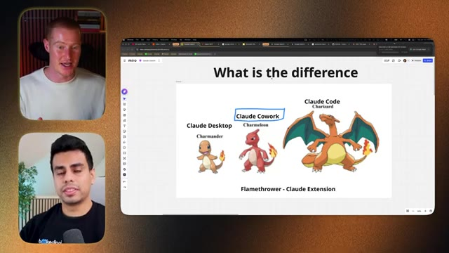
🔍 AgrandirEt à partir de là, je veux juste aborder la façon dont une personne utiliserait réellement Cloud Cowork, n'est-ce pas ? Et imaginez que c'est vous, ayant l'air plutôt bien. Et tout ce que vous avez à faire, c'est simplement d'utiliser ce terminal qu'ils ont. Et ce pour quoi Claude Cowork a vraiment été conçu, c'était pour faire en quelque sorte des tâches ponctuelles.
Interface & Outils : Navigateur web affichant l'application Miro.
Contenu textuel & Code : Texte 'how you use it', un dessin de bonhomme allumette et une interface de terminal/application en dessous.
Action / Démonstration : Le présentateur explique visuellement comment un utilisateur interagit avec l'outil via un schéma explicatif.
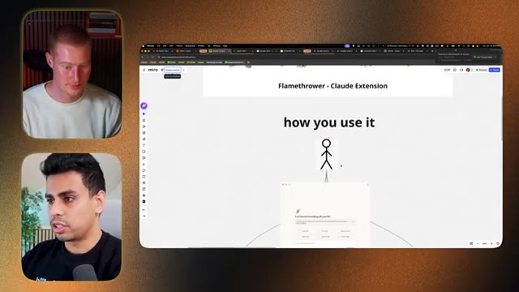
🔍 AgrandirDonc, si je dézoomais un petit peu, vous voyez que vous pouvez lancer de multiples instances de ces collègues Claude, appelons-les ainsi, qui font tous leur tâche de manière indépendante. Ils ont leur propre contexte. Ils ont leurs propres artefacts qu'ils créent. Donc par exemple, ils vont créer leurs propres documents. Ils vont avoir leurs propres barres de progression, etc.
Interface & Outils : Navigateur web affichant un tableau blanc Miro avec des schémas, et fenêtres vidéo des intervenants à gauche.
Contenu textuel & Code : Un diagramme montrant un utilisateur relié à plusieurs instances ou fenêtres de tâches représentées par des icônes d'éclair sur fond rouge, avec le texte "how you use it" et "Task".
Action / Démonstration : Le présentateur dé zoome sur le schéma Miro pour illustrer le fonctionnement de multiples instances indépendantes de Claude.
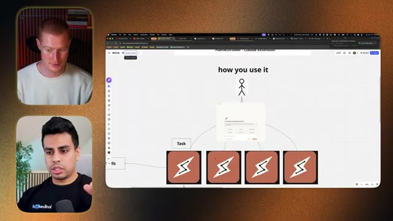
🔍 AgrandirEt leur tâche est d'aller d'un point A à un point B. Genre, hé, vous avez toutes ces entrées, donnez-moi cette sortie. C'est chaque tâche, n'est-ce pas ? Et le facteur de différenciation entre Claude Desktop et Claude Cowork, c'est ceci. Si je prends un peu plus de recul, je vais vous montrer ceci. C'est le fait que Claude Cowork a accès à tous ces petits connecteurs en quelque sorte et à cette chose appelée compétences, n'est-ce pas ?
Interface & Outils : Tableau blanc Miro et fenêtres de visioconférence.
Contenu textuel & Code : Schéma textuel et visuel avec les mentions "how you use it", "Task" et des icônes symbolisant des processus ou flux de travail.
Action / Démonstration : Le présentateur explique visuellement le concept de passage d'un point A à un point B à l'aide d'un schéma explicatif.
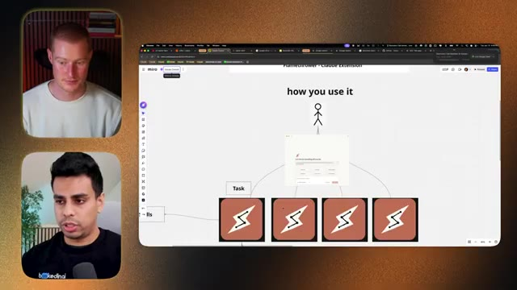
🔍 AgrandirEt pour plonger dans ce que c'est en quelque sorte, c'est que Claude Desktop ne sait pas ce qu'il y a dans vos fichiers ou il ne sait pas ce qu'il y a dans votre Google Drive ou même ce que vous essayez de faire, il n'a aucun contexte, c'est comme, vous savez, un type vraiment intelligent qui n'a aucune idée de ce que vous essayez de faire, n'est-ce pas ? C'est un excellent point, ouais, littéralement, c'est comme s'il n'avait pas de mains pour aller de l'avant et vraiment, genre, faire des choses, attraper des choses, exécuter des tâches pour vous, il est juste, genre, bloqué à l'intérieur de cette petite bulle de chat en quelque sorte, n'est-ce pas ? Ouais, donc c'est comme bloqué à l'intérieur d'une bulle de chat et c'est un peu comme au tour par tour, vous savez, du genre, en fait, c'est peut-être une autre analogie avec Pokémon où, genre, vous faites
Interface & Outils : Navigateur web affichant un tableau blanc Miro et une application de visioconférence.
Contenu textuel & Code : Schéma conceptuel comprenant les sections 'Task', 'Skills' et 'Connectors' avec des icônes d'applications comme Zapier, Google Drive et Chrome.
Action / Démonstration : Présentation et explication visuelle du fonctionnement des connecteurs et du contexte de l'IA.
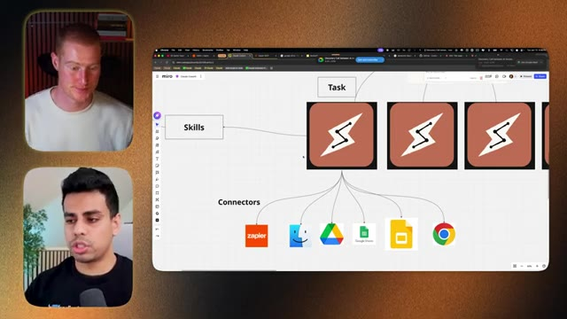
🔍 Agrandirun mouvement et ensuite ils font un mouvement et c'est comme ça. Donc ça c'est Cloud Co-Work d'un autre côté, ce que ça fait c'est que vous lui donnez une directive et ensuite Cloud Co-Work va lancer de multiples instances que vous ne verrez pas, mais il va essentiellement créer sa propre liste de tâches, n'est-ce pas ? Et ensuite il va lancer des sous-agents en arrière-plan, qui vont exécuter chacune de ces listes de tâches en utilisant davantage de capacités comme ces connecteurs. Comme par exemple, il va aller chercher un fichier, il va modifier vos Google Sheets. C'est peut-être là que se trouvent certaines informations. Il y a beaucoup d'informations stockées dans tous les endroits différents. Et disons que la chose que vous essayez de faire n'a pas d'API. Il
Interface & Outils : Tableau blanc collaboratif en ligne (Miro), affichant le présentateur et son invité en miniatures vidéo sur le côté gauche.
Contenu textuel & Code : Schéma d'architecture visuel structuré en catégories : 'Task', 'Skills' et 'Connectors' reliés à différentes icônes d'outils bureautiques et web.
Action / Démonstration : Le présentateur explique le fonctionnement des agents et des intégrations logicielles à l'aide d'un schéma conceptuel.
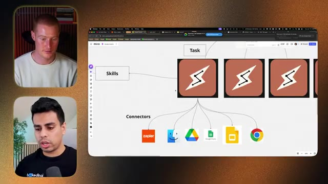
🔍 Agrandirne peut se faire que via votre navigateur. Donc Claude Cowork a en fait aussi accès à votre navigateur grâce à cette petite extension, sur laquelle nous reviendrons un peu plus tard. Et une autre partie intéressante de Cowork, c'est le fait que vous pouvez lui enseigner des compétences. C'est un peu comme, vous savez, quand j'ai dit donner des mains à Claude Desktop, je le pensais littéralement. Vous lui donnez des mains et vous lui dites, vous prenez ses mains et vous êtes genre, hé, c'est comme ça qu'on fait quelque chose. Souvenez-vous de ça. Et la prochaine fois que je vous demanderai de faire ça, allez le faire. C'est donc fondamentalement la différence entre Claude Desktop et Claude Cowork et le moment où vous devriez utiliser l'un ou l'autre. D'accord. Oui, tout à fait, c'est très logique.
Interface & Outils : Logiciel de tableau blanc en ligne Miro, interface de visioconférence (type Google Meet ou Zoom).
Contenu textuel & Code : Schéma conceptuel expliquant l'apprentissage de compétences ("Skills"), les tâches ("Task") et les connecteurs vers divers outils (Zapier, Finder, Google Drive, Google Sheets, Google Slides, Chrome).
Action / Démonstration : Présentation et explication visuelle de l'architecture et des fonctionnalités de l'outil Claude Cowork à l'aide d'un mind map.
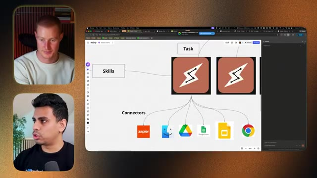
🔍 Agrandir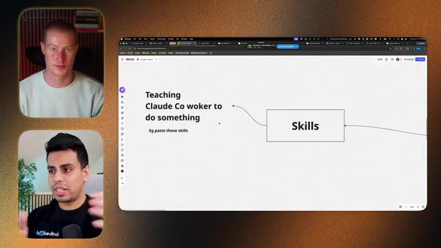
🔍 AgrandirEt pour les compétences, c'est quelque chose où, une fois qu'ils ont cette compétence, tu n'as pas besoin de revenir en arrière et de lui réapprendre à le faire ou de lui donner un prompt spécifique à chaque fois. Quand tu lui donnes cette tâche, il sait tout simplement, d'accord, c'est déjà expliqué, tu sais, Salomon m'a déjà décomposé étape par étape comment exécuter ceci. Et il parcourt simplement cette liste de contrôle, n'est-ce pas ? Exactement. Ouais. Donc il crée la liste de contrôle et crée même une sous-liste de contrôle. Comme par exemple, je te le montrerai peut-être tout à l'heure, nous allons aborder un cas où essentiellement quelqu'un devrait, disons qu'on te confie la tâche de faire 10 diapositives différentes. Et il y a beaucoup de sous-étapes entre les deux.
Interface & Outils : Miro (tableau blanc en ligne) et visioconférence à deux intervenants.
Contenu textuel & Code : Schéma avec les blocs 'how you use it', 'Task', 'Skills', et des icônes de connecteurs (Google Drive, Chrome, etc.).
Action / Démonstration : Le présentateur explique l'architecture d'utilisation des compétences et des tâches via un schéma visuel.
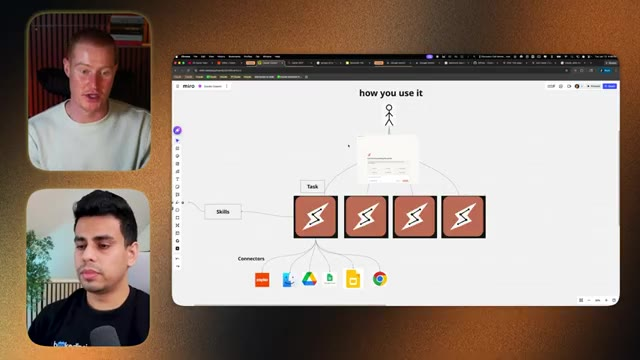
🔍 AgrandirSi vous y pensez, vous devez créer la diapositive. Vous devez savoir quoi écrire dans la diapositive. Vous devez mettre un graphique dans toutes ces petites choses. Celles-ci sont réalisées par différents sous-agents du cowork que vous ne voyez pas réellement. Et cela se produit simplement en arrière-plan, mais Cloud Cowork étant vraiment cool. L'agent lui-même s'en charge. Oui. C'est fou. Maintenant que nous avons une sorte de compréhension de la façon exacte dont fonctionne Cloud Cowork, allons-y et trouvons concrètement quelques cas d'usage et montrons, d'accord, si vous êtes une personne tout à fait ordinaire au quotidien, à quoi pourriez-vous commencer à l'utiliser dès maintenant ? Et nous allons vous donner des cas d'usage tangibles que vous pourriez
Interface & Outils : Navigateur web affichant un tableau blanc Miro avec des schémas, et interface de visioconférence.
Contenu textuel & Code : Schéma d'architecture de workflow montrant un utilisateur ("how you use it"), des tâches ("Task"), des sous-agents représentés par des icônes d'éclair, et des connecteurs vers des outils (Google Drive, Google Sheets, Chrome, etc.).
Action / Démonstration : Présentation et explication d'un schéma conceptuel sur l'utilisation des sous-agents et de l'automatisation en arrière-plan.
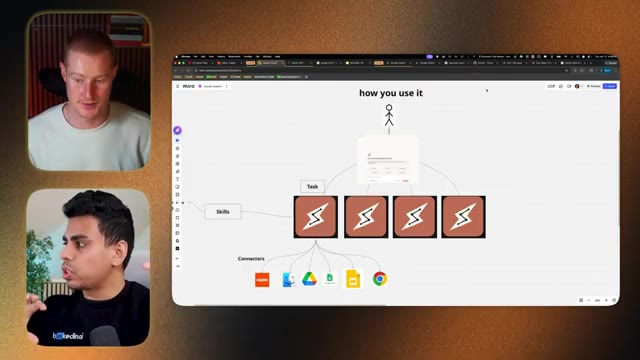
🔍 Agrandirsoit partir et utiliser et quelqu'un a en fait un exemple plutôt sympa qu'il va nous montrer maintenant ouais euh merci brock donc je suppose que le premier cas d'utilisation que je vais vous montrer et c'est vraiment sympa et l'un de mes préférés c'est juste d'utiliser des connecteurs pour créer des diapositives n'est-ce pas et je vais vous montrer en quelque sorte le résultat final maintenant juste pour que vous ayez un petit aperçu rapide et c'est le genre de choses qu'on peut créer avec clot co-work n'est-ce pas et si je vais sur ma diapositive et vous voyez que pour mon entreprise elle a tous mes éléments comme mes logos, elle crée ces petits emojis, tout ça, ces petits gifs, elle les trouve depuis mon
Interface & Outils : Tableau blanc Miro sur navigateur web, avec des fenêtres de visioconférence intégrées pour les intervenants.
Contenu textuel & Code : Schéma d'architecture ou mindmap comprenant des blocs "Task", "Skills", et plusieurs icônes de connecteurs (Zapier, Google Drive, Google Sheets, Chrome, etc.).
Action / Démonstration : Présentation visuelle d'un cas d'utilisation axé sur l'utilisation de connecteurs et d'automatisations.
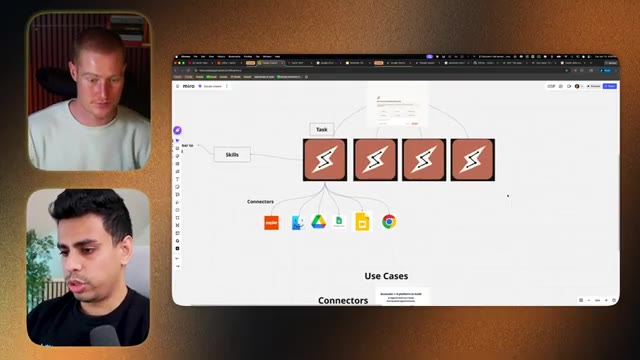
🔍 Agrandirfichiers, mes dossiers d'actifs, les insère, et il a aussi du contexte. Vous pouvez construire toutes ces choses aléatoires qu'normalement vous devriez dire à Claude à chaque étape, n'est-ce pas ? Et pour construire ceci, c'est en fait vraiment simple. Donc étape un, ce que vous voulez faire, c'est d'aller sur zapier.com.mcp. Et ce que nous faisons ici, c'est juste pour me référer à mon diagramme.
Interface & Outils : Google Slides et navigateur Chrome
Contenu textuel & Code : Texte marketing et statistiques sur le taux de réactualisation des rendez-vous ('30-40% of no-shows rebook') et la personnalisation de marque.
Action / Démonstration : Présentation de diapositives marketing illustrant les bénéfices et fonctionnalités de l'application.
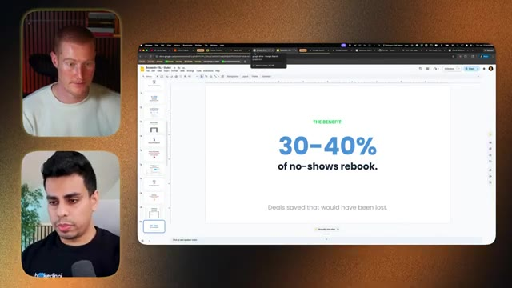
🔍 Agrandir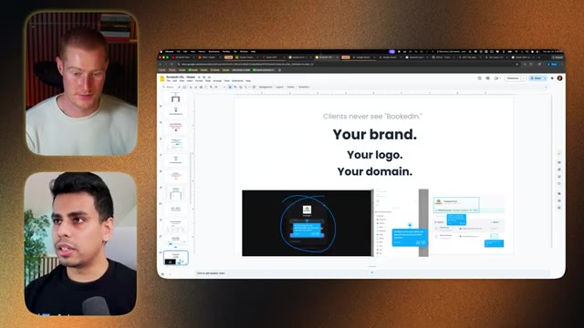
🔍 AgrandirNous donnons à Claude collègue une compétence ou un accès pour faire quelque chose, d'accord ? Comme Google Slides. Mais le problème ici, c'est que vous verrez que Claude n'a en fait pas accès à Google Slides. Pour obtenir des connecteurs ici même, si vous appuyez sur ce plus, puis sur connecteurs, puis sur gérer les connecteurs, vous verrez qu'il y a un tas de connecteurs, mais il n'a pas accès à Google Slides, n'est-ce pas ?
Interface & Outils : Navigateur web affichant un tableau blanc Miro.
Contenu textuel & Code : Schéma visuel avec des icônes d'applications connectées (Zapier, Google Drive, Google Docs/Slides, Chrome) et deux vignettes vidéo des intervenants sur le côté gauche.
Action / Démonstration : Présentation du schéma conceptuel expliquant les connecteurs et les compétences attribuées aux agents IA.
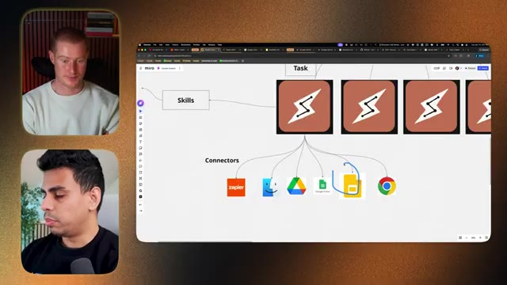
🔍 AgrandirDonc si vous voulez réellement donner à votre collègue virtuel des super-pouvoirs pour faire des choses qu'il n'a peut-être pas la capacité de faire, vous allez sur Zapier. Et puis juste ici, vous allez sur zapier.com slash MCP. Vous cliquez sur nouveau serveur MCP. Vous sélectionnez un client et ensuite, vous voyez, il y a littéralement cloud pour vous. Et il y a beaucoup de choses, mais vous pouvez simplement sélectionner cloud. C'est déjà utilisé, serveur MCP.
Interface & Outils : Navigateur web affichant Miro et le site web de Zapier (zapier.com/mcp).
Contenu textuel & Code : Schémas d'architecture de flux de travail et interface de configuration de serveur MCP avec options de connecteurs.
Action / Démonstration : Navigation et présentation des outils de connexion et de création de serveurs MCP sur Zapier.
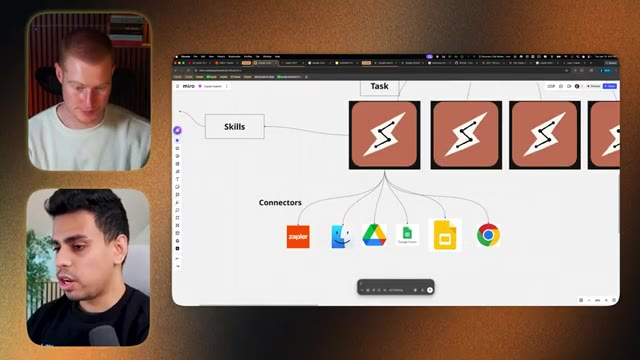
🔍 Agrandir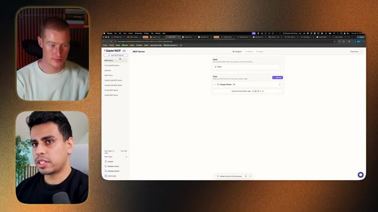
🔍 AgrandirDonc ça c'est celui que j'ai déjà construit. Et vous pouvez cliquer sur ajouter un outil et vous pouvez aller dans slides et cliquer sur Google Slides. Et vous voyez qu'il y a beaucoup de choses différentes que vous pouvez faire. Et tout ce que vous faites, c'est de cocher tout ça. Vous le connectez. Boum et c'est aussi simple que ça de connecter Google Slides en donnant l'accès à votre Cloud Code et ensuite vous le connectez juste comme ça donc vous voulez prendre votre jeton je ne veux pas montrer mon jeton pour l'instant mais c'est tout ce que vous avez à faire c'est juste ici vous allez là et ensuite vous allez sur Zapier dans Claude cliquez sur connecter et vous collez votre quelque part votre URL ici et cliquez sur continuer et ensuite vous lui demandez juste de faire des trucs et ça le fait pour vous ouais c'est dingue et une chose à mentionner donc Zapier connecte
Interface & Outils : Navigateur web affichant l'interface de Zapier et les options Google Slides.
Contenu textuel & Code : Menu de sélection d'actions Google Slides ("Find Presentation", "Create Presentation from Template", "Add/Get Charts", "API Request (beta)").
Action / Démonstration : Sélection d'un outil d'intégration Zapier pour lier l'automatisation à Google Slides.
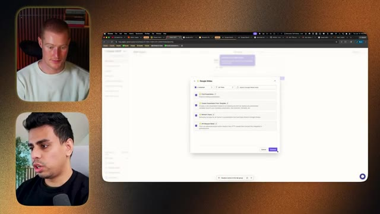
🔍 Agrandirà je crois plus de 8 000 applications différentes selon l'application que vous utilisez, il y a de grandes chances pour que Zapier se connecte avec. Et je pense qu'à travers cela, il y a plus de 30 actions qu'il peut exécuter. Oui, exactement. Ce que Salman vient d'entourer là. Vous pouvez donc simplement aller trouver n'importe quelle application que vous utilisez, l'activer. Et maintenant, à l'intérieur de Claude Cowork, il a fondamentalement la capacité d'aller soit en extraire des informations, soit d'aller exécuter différentes actions. Et bien sûr, selon l'application que vous utilisez, l'action peut être un tout petit peu différente, mais oui, c'est un, c'est un cas d'usage génial et une sorte de petite astuce que les gens peuvent commencer à utiliser quand ils utilisent Claude Cowork pour en quelque sorte, je ne sais pas, amplifier le
Interface & Outils : Navigateur web affichant l'application Zapier MCP (Model Context Protocol).
Contenu textuel & Code : Configuration du serveur MCP avec des applications intégrées telles que Google Slides et Google Sheets.
Action / Démonstration : Présentation et démonstration de la connexion entre Zapier et différentes applications via le protocole MCP.
quantité de choses qu'il peut aller faire. Parce que pour l'instant, ça a l'air un petit peu limité si vous n'avez pas configuré de connecteurs MCP. Oui. Donc, en plongeant là-dedans, c'est vraiment génial. Alors maintenant, imaginez qu'il n'y ait pas de connecteur MCP, d'accord ? Ce que nous pouvons faire, c'est littéralement donner à Claude accès à votre navigateur grâce à cette extension. Donc, disons que je vais vous donner un exemple.
Interface & Outils : Navigateur web affichant l'interface Zapier MCP.
Contenu textuel & Code : Panneau de configuration du serveur MCP avec la liste des applications connectées (Google Slides et Google Sheets).
Action / Démonstration : Présentation et explication de la configuration des connecteurs MCP sur Zapier.
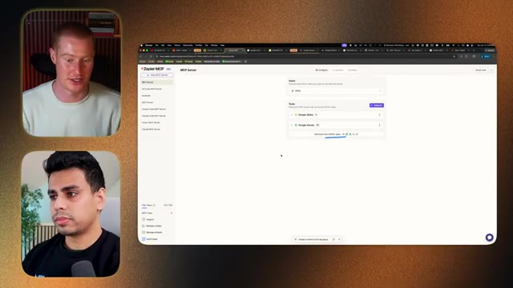
🔍 AgrandirClaude ne veut évidemment pas que tu contrôles Gemini, n'est-ce pas ? Et disons que je veux utiliser mon Gemini pour faire beaucoup de présentations parce que leur Nano Banana Pro est incroyable. Donc ce que je pourrais faire, disons que quelqu'un me confie cette tâche, hé, voici un million de prompts différents que je veux que tu utilises pour générer des diapos à partir de ça, d'accord ?
Interface & Outils : Navigateur web, interface Google Gemini, tableau blanc Miro.
Contenu textuel & Code : Interface utilisateur de Gemini avec invite de commande "Where should we start?", et diagramme de workflow sur Miro avec des blocs textuels et des icônes d'automatisation.
Action / Démonstration : Présentation et navigation à travers les différentes plateformes d'IA et outils de productivité (Gemini et Miro/Claude).
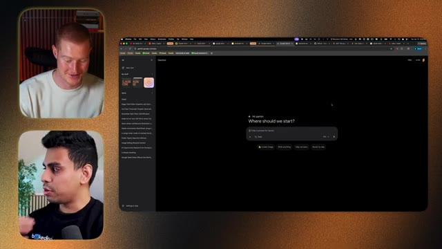
🔍 Agrandir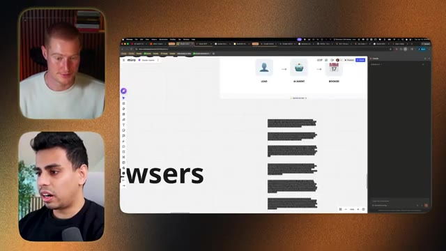
🔍 AgrandirJe peux juste copier ça. Je peux aller sur Gemini, n'est-ce pas ? Et juste ici, plutôt que de le faire moi-même, je peux simplement coller tout ça ici et je peux dire, hé, crée une image de chacun de ceux-là et fais-le. En fait, non, laisse-moi te montrer ça d'abord. Donc d'abord, je veux te montrer ça. Donc en bas à droite ici, dans cette petite icône, tu peux enseigner à Claude. Donc tu cliques sur enseigner à Claude et je vais lancer l'enregistrement. Et juste ici, disons que j'ai mon— Il est littéralement en train de regarder ce que tu fais sur ton ordinateur en ce moment même.
Interface & Outils : Navigateur web affichant l'interface de Google Gemini et une interface de chat (Claude).
Contenu textuel & Code : Interface utilisateur de Google Gemini avec la zone de saisie de texte et des suggestions de prompts ("Where should we start?").
Action / Démonstration : Le présentateur se prépare à coller ou utiliser du texte pour générer des images via Gemini.
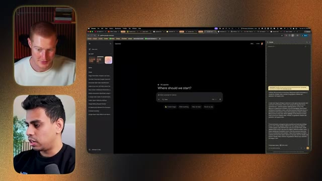
🔍 AgrandirÇa va émuler ça. C'est fou. Ça regarde littéralement ce que je fais. Donc là, disons que je retourne sur mon tableau Miro ici et je vais prendre ce premier prompt, puis je retourne ici. Oh, c'est le mauvais ici. Et ensuite je le colle. Et puis est-ce que tu le vois ici ? Ça dit littéralement ce qui se passe. Et ensuite je clique. Ouais. Donc ça enregistre littéralement ce que je fais. Ça apprend de mes actions. Claude n'est pas stupide. La prochaine fois que tu lui demandes de faire quelque chose, ça fait juste boum, boum, boum. C'est beaucoup plus rapide. Donc je recommande toujours, si tu veux qu'il fasse quelque chose souvent, tu lui apprends. OK, super, donc maintenant tu cliques juste sur terminé, maintenant il a cette compétence.
Interface & Outils : Navigateur web, tableau blanc Miro, interface de Gemini / Claude.
Contenu textuel & Code : Prompts textuels détaillés pour la génération d'images ou de contenu, et étapes d'interaction affichées dans un panneau latéral.
Action / Démonstration : Copie d'un prompt depuis le tableau Miro pour le coller et l'exécuter dans l'outil d'IA Gemini.
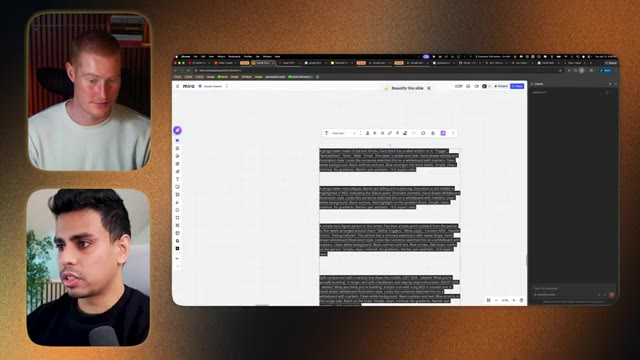
🔍 Agrandir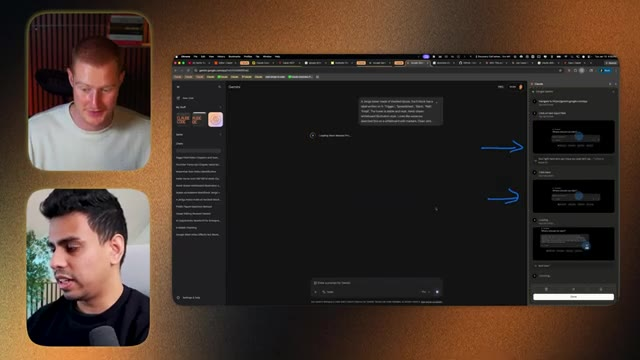
🔍 Agrandird'accord c'est en train d'enregistrer la compétence c'est en train de générer le raccourci comment c'est d'accord c'est vraiment génial euh demande à Gemini n'est-ce pas et donc tu peux le nommer comme tu veux chaque fois que tu fais un slash ou un antislash peu importe ce que c'est un slash tu le tagues simplement et ensuite il sait simplement que cette compétence spécifique sera alors déclenchée pour ensuite s'exécuter de cette façon n'est-ce pas exactement oui donc tu peux simplement te dire si tu veux aller un peu plus loin tu vois il y a comme un petit bouton de planification ici et ce que tu peux faire c'est disons que tu dois faire ça tous les jours tu peux le planifier pour tous les jours ouais bon sang ouais c'est fou mec c'est fou là où on va avec cette histoire d'IA alors maintenant si je peux juste
Interface & Outils : Navigateur web, Google Gemini, interface de création de raccourci.
Contenu textuel & Code : Génération d'un raccourci (Create shortcut) avec un prompt décrivant une étape pour interagir avec Gemini.
Action / Démonstration : Configuration et création d'un raccourci à partir d'une interaction sur Gemini.
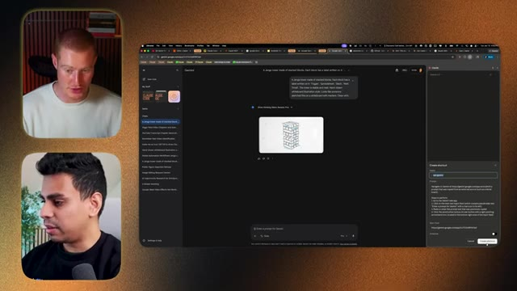
🔍 Agrandirgenre, fait un slash demande à Gemini de faire des photos de tout ça, il va le faire et ensuite, espérons-le, comme tu vois, il contrôle mon ordinateur quand il y a cette lueur orange bizarre, il contrôle mon ordinateur et il va commencer à faire ces choses pour moi, donc c'est comme s'il examinait la tour Jenga générée, tu vois comment il prend une capture d'écran, il fait défiler vers le bas, vers le haut, tout ça, et pour gagner du temps, je veux te montrer, j'étais juste en train de jouer avec et là, il était juste en train de générer toutes ces diapositives pour moi parce que je ne veux pas faire ça, je veux juste
Interface & Outils : Navigateur web Google Chrome, interface Gemini (Google), application de visioconférence.
Contenu textuel & Code : Une image générée représentant une tour de blocs empilés avec du texte et un prompt associé, ainsi que l'historique des discussions.
Action / Démonstration : Le présentateur montre l'interface de Gemini pour illustrer la génération d'images et l'interaction avec l'IA.
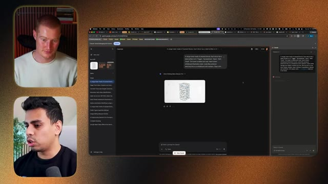
🔍 Agrandirje l'ai donné à Gemini et j'ai, tu sais, été me chercher une tasse de café ou d'eau, c'est fou et c'est un peu comme si, euh, il a un style spécifique auquel il s'en tient donc je suppose que tu as probablement prompté « je veux que ce soit dans ce style spécifique ». Pour que ce soit toujours en accord avec l'image de marque de n'importe quelle diapositive ou ressource que tu essaies de créer. C'est juste, mec, c'est tellement fou.
Interface & Outils : Navigateur web affichant une interface d'IA (style Gemini) et double flux vidéo des interlocuteurs.
Contenu textuel & Code : Historique de discussion avec des prompts textuels et des illustrations générées au style dessin schématique en noir et blanc (diagrammes explicatifs).
Action / Démonstration : Le présentateur discute des résultats générés par l'IA et de la cohérence du style visuel des images produites.
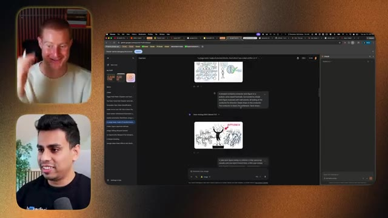
🔍 AgrandirGenre, je pense que nous, en tant que personnes qui sommes dans le domaine de l'IA, on fait littéralement des recherches sur ces trucs toute la journée et on l'utilise. Pour les gens qui débutent dans l'IA et qui ont seulement entendu parler de ChatDBT ou l'ont utilisé deux ou trois fois, tu vois ça et tu te dis, c'est dingue. On pourrait vraiment faire ça dès maintenant. C'est juste, ça m'épate. C'est tellement cool à regarder.
Interface & Outils : Navigateur web avec interface d'outil d'intelligence artificielle (type Google Gemini ou interface similaire).
Contenu textuel & Code : Schémas circulaires comparatifs (camemberts) illustrant le temps passé ou le processus 'Before / After', accompagnés de blocs de texte explicatifs et de prompts.
Action / Démonstration : Présentation visuelle et discussion sur l'utilisation et la compréhension des outils d'IA par les utilisateurs.
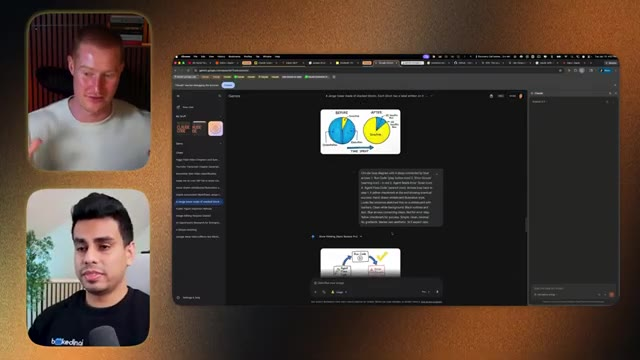
🔍 Agrandirouais c'est c'est vraiment quand tu es créatif avec cette compétence de navigateur le monde s'offre à toi tu vois et la raison pour laquelle j'insiste sur ce euh navigateur juste ici c'est parce que tu peux littéralement aller sur Claude il connaît les compétences que tu lui as apprises tu vois et parce qu'il connaît toutes les compétences que tu lui as apprises il peut commencer à le faire genre tu n'as plus besoin de retourner sur ton navigateur ou et puis de taper ici tu peux juste taper ici lancer une nouvelle tâche et ça va juste le faire et c'est fou et euh je vais dire le dernier et je vais montrer c'est genre un truc qui est énorme c'est le fait
Interface & Outils : Interface web de Claude / LLM, navigateur web, fenêtres modales de paramètres.
Contenu textuel & Code : Menus de configuration d'IA, interface de discussion avec des prompts relatifs à des diagrammes et des flux de travail.
Action / Démonstration : Navigation et configuration des paramètres d'un assistant IA dans le navigateur.
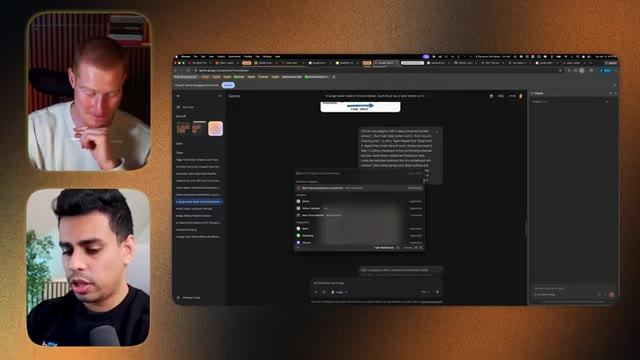
🔍 Agrandir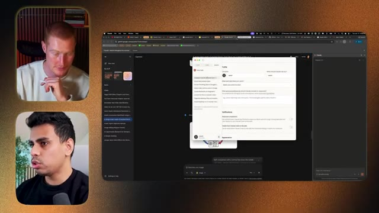
🔍 Agrandirque le collègue Claude est si bon, c'est parce que vous pouvez lui faire faire des choses que tous les autres modèles peuvent faire, donc euh si vous avez regardé Avengers et que vous avez vu du genre Thanos avec les petites pierres d'infinité, vous pouvez penser à Claude et l'équiper de différentes pierres d'infinité en utilisant ce concept de compétences. Et par exemple, Google a le meilleur modèle d'images, n'est-ce pas ? Claude ne peut littéralement pas créer d'images. Donc ce que nous pouvons faire, c'est donner à Claude une compétence pour créer ces images. D'accord. Et je vais montrer
Interface & Outils : Tableau blanc Miro et interface de visioconférence.
Contenu textuel & Code : Schéma textuel et visuel avec des icônes représentant les "Skills" (compétences), "Task" (tâches) et "Connectors" (connecteurs vers des applications tierces comme Zapier, Finder, Google Drive, Google Sheets).
Action / Démonstration : Présentation et explication d'un schéma explicatif sur l'utilisation des connecteurs et compétences avec l'IA.
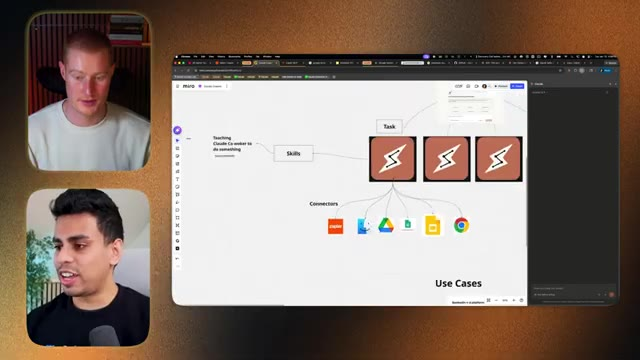
🔍 Agrandirvous comment j'ai fait ça. Et c'est grâce à cette chose appelée les compétences. J'espère que vous pouvez voir mon écran, mais juste ici, vous verrez que si vous allez juste ici et dans les paramètres, cliquez sur paramètres, puis allez dans capacités. Si vous faites défiler vers le bas, il y a cette chose appelée compétences et vous pouvez ajouter n'importe quelle compétence que vous voulez. Techniquement, vous n'avez pas besoin de faire cela vous-même parce que vous pouvez simplement dire, Hé, Claude, apprends ceci et ensuite fais-le pour moi. C'est ça. Donc, pour revenir un tout petit peu en arrière. Si vous expliquez à Claude comment faire quelque chose et qu'il le fait de la manière dont vous voulez qu'il le fasse, pouvez-vous simplement dire,
Interface & Outils : Interface web de chatbot / assistant IA et tableau blanc/documents Miro.
Contenu textuel & Code : Instructions textuelles sur l'installation d'outils, gestion de clés API, et messages de journalisation ou d'erreurs (mentionnant une erreur 403 Forbidden).
Action / Démonstration : Navigation et explication d'une interface logicielle ou d'un flux de travail lié à des configurations d'API et de capacités.
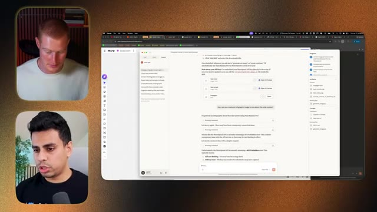
🔍 AgrandirHé, je veux que tu te souviennes exactement de la façon dont tu as fait ça. Et créons une compétence à partir de ça. Ouais. C'est littéralement ce qui vient de se passer. D'accord. J'ai compris. C'est littéralement ce qui vient de se passer. Nous venons de créer une compétence qui consiste à se souvenir de la façon de faire quelque chose. Mais maintenant, cela va un peu plus loin, n'est-ce pas ? Il s'agit plutôt de le contrôler à partir d'un emplacement centralisé. Donc maintenant, par exemple, tu peux même acheter des compétences ou trouver des compétences sur Internet.
Interface & Outils : Navigateur web, tableau blanc Miro, interface de discussion latérale (style Claude)
Contenu textuel & Code : Schéma d'architecture avec les sections Connectors, Browsers et Skills, ainsi qu'une invite textuelle concernant la création d'une image du système solaire.
Action / Démonstration : Discussion entre les intervenants et manipulation visuelle d'un schéma d'architecture logicielle.
Donc c'est un dépôt aléatoire que j'ai trouvé sur GitHub où il est écrit compétences cloud géniales, n'est-ce pas ? Et vous pouvez voir que vous pouvez faire de la recherche de contenu. Donc il va utiliser perplexity, améliorer des images. Claude ne peut pas faire ces choses, mais vous pouvez lui injecter ces compétences. Genre, vous pouvez juste faire en sorte que, vous allez ici et vous allez sur Claude desktop et ensuite vous pouvez simplement retourner ici.
Interface & Outils : Navigateur web affichant GitHub.
Contenu textuel & Code : Liste de fichiers et dossiers du dépôt GitHub (ex: check-plugin, brand-guidelines, image-enhancer, content-research-notes).
Action / Démonstration : Navigation et présentation du dépôt GitHub listant les différentes compétences et outils pour Claude.
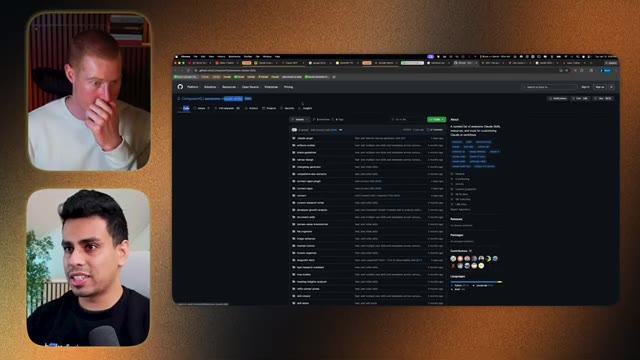
🔍 AgrandirVotre application de bureau Claude, vous pouvez la coller ici et faire du genre, hé, télécharge la compétence pour XYZ. C'est ça. Et je vais le faire. Et juste pour vous montrer, par exemple, Claude ne peut littéralement pas créer d'images. Donc ce que j'ai fait, c'est que je lui ai donné la compétence. J'étais du genre, il y a un truc qui s'appelle WaveSpeed. Brock, tu connais WaveSpeed ? Ouais, j'en ai entendu parler. Ouais. Ouais. Donc WaveSpeed, c'est cette API de génération d'images. C'est ça.
Interface & Outils : Application de bureau Claude / Navigateur web
Contenu textuel & Code : Interface de discussion avec l'IA montrant des messages d'erreur d'API (403 Forbidden) et des liens de compétences GitHub.
Action / Démonstration : Démonstration de l'utilisation de Claude pour la génération d'images et des erreurs rencontrées avec l'API.
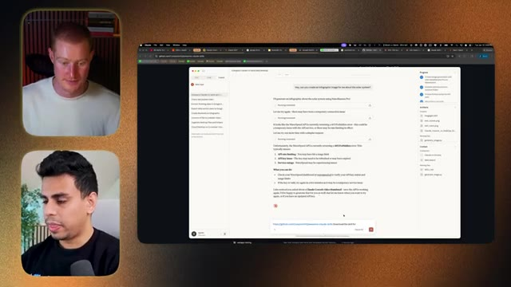
🔍 AgrandirJe peux appeler Nano Banana Pro. Je peux faire des vidéos. Je peux faire toutes ces choses avec WaveSpeed. Et j'ai juste inséré ma clé API WaveSpeed dedans. Et j'ai dit à Claude, hé, crée une compétence telle que chaque fois que j'ai besoin qu'une image ou qu'une vidéo soit générée, tu vas appeler WaveSpeed et le faire. Et ensuite, tu vois juste ici, il a foncé et l'a fait pour moi.
Interface & Outils : Navigateur web affichant une page GitHub, application de visioconférence.
Contenu textuel & Code : Documentation textuelle décrivant l'utilisation d'une compétence d'IA pour la génération d'images via une API (NanoBanana Pro / WaveSpeed), avec des exemples de fichiers et de code.
Action / Démonstration : Présentation et explication d'une compétence personnalisée configurée dans l'interface de l'outil d'IA pour générer automatiquement des images.
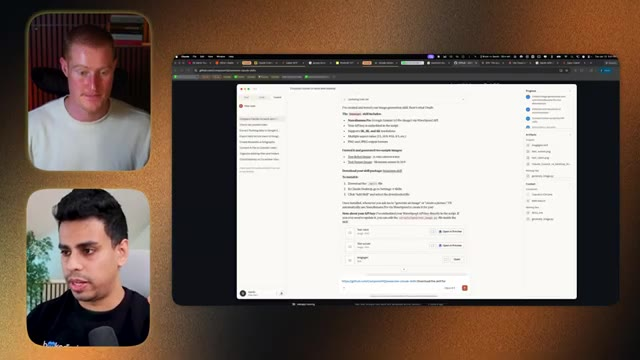
🔍 AgrandirI don't want to show my API key, but it uses Nano Banana Pro. And now I can just open my files and I can see Claude generated these really cool images. Could you real quickly, I want to see, yeah, that's crazy. Could you real quickly show me like what wave speed looks like? Cause I've, I've played around with it a little bit, but I like, if I've never seen it before, I just want to know kind of exactly what it would look like if we were to begin using it.
Interface & Outils : macOS Preview, Navigateur web (Google Chrome / GitHub) et double flux vidéo des présentateurs.
Contenu textuel & Code : Fichiers d'images générées (robot, paysage) et liste de scripts/compétences GitHub (« Claude Skills »). [DESC_IMAGE_3] Navigation dans les fichiers et démonstration des images générées par l'API au cours de la discussion technique.
Action / Démonstration : Explications face caméra et analyse conceptuelle des marchés.
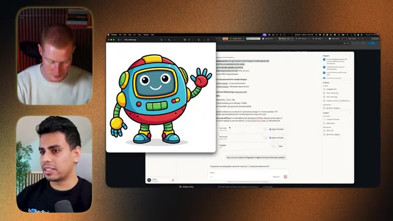
🔍 Agrandir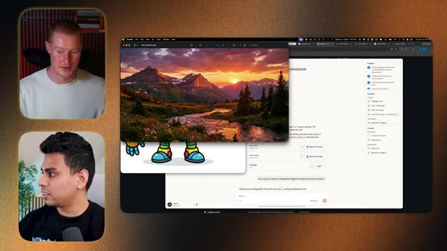
🔍 Agrandir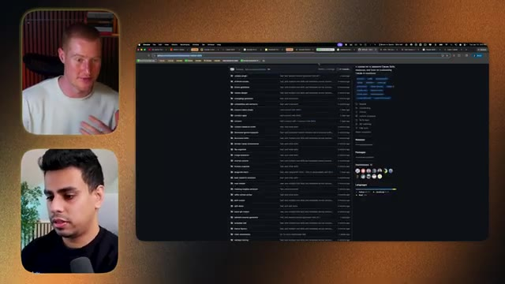
🔍 AgrandirYeah. So you go to wavespeed.ai and I like wave speed because it's actually really reasonable for their image and models. And I have some credits. I'm just logging in right now. And you see, I have a bunch of credits and I made some stuff, but this is about it. So all I have to do is go to API keys, copy this API key right here. and I called it for agentic workflows.
Interface & Outils : Navigateur web affichant le site WaveSpeedAI (wavespeed.ai)
Contenu textuel & Code : Page de connexion avec les boutons "Sign in with Google" et "Sign in with GitHub", ainsi qu'un aperçu des services et des modèles disponibles en bas de page.
Action / Démonstration : Le présentateur présente le site web wavespeed.ai et se prépare à se connecter pour accéder aux modèles d'intelligence artificielle et aux clés API.
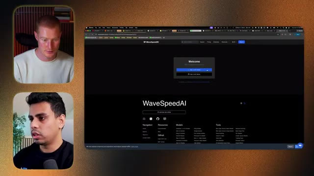
🔍 AgrandirJ'ai copié ça. Je suis retourné dans Cloud Desktop. J'ai collé ça. Et ensuite j'ai dit, hé, crée-moi cette vitesse d'onde. Et vous pouvez faire cela avec n'importe quel type d'API ou de connecteur auquel vous pouvez penser. Et ensuite, vous voyez sur le côté droit, si Cloud décide d'utiliser des outils sympas, il vous dira littéralement que, hé, je vais faire une recherche sur le Web.
Interface & Outils : Application de bureau Claude Desktop (interface de chat avec panneau d'artefacts) et navigateur web.
Contenu textuel & Code : Instructions d'installation d'une compétence d'infographie, scripts Python, exemples d'images générées et un prompt utilisateur demandant de créer une infographie sur le système solaire.
Action / Démonstration : Navigation et explication de l'utilisation d'une compétence d'API tierce intégrée dans Claude Desktop.
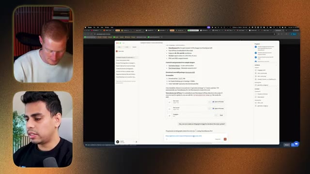
🔍 AgrandirI'm going to build this markdown. I'm going to generate this image. and it's literally just executing code. So it's generating images by executing this Python file. But I don't need to know that. I just need to know that it generated my image. Yeah, dude, that's so crazy. Just by literally connecting it to one API and then it just has the ability to go off and generate these images for us.
Interface & Outils : Interface web d'assistant IA / Navigateur web (Google Chrome)
Contenu textuel & Code : Documentation au format Markdown, instructions pour l'utilisation d'une API (Gemini/NanoBannerPro), scripts Python listés dans le volet latéral (ex: generate_image.py)
Action / Démonstration : Présentation et démonstration de la génération d'images automatisée par l'exécution de code Python via une interface d'assistant IA.
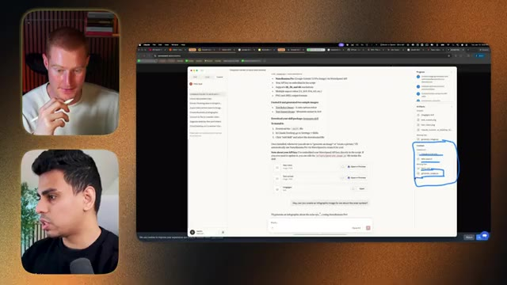
🔍 AgrandirComme tu l'as dit, parce que Claude ne peut pas nativement, ils n'ont pas d'outil de génération d'images tout comme ChatGPT le fait ou Gemini le fait. Évidemment, NanoBananda est super, mais genre, comment est-ce qu'on commence seulement à utiliser ça ? Donc tu as trouvé une solution de contournement pour générer les images avec Nano Banana Pro sans, tu sais, t'intégrer directement dans Gemini, j'imagine. Donc ouais, c'est dingue.
Interface & Outils : Interface web / Application de discussion (navigateur web)
Contenu textuel & Code : Texte explicatif, instructions d'installation, liste des artefacts générés et prévisualisations d'images avec des boutons "Open in Preview".
Action / Démonstration : Présentation de la solution de contournement pour permettre la génération d'images avec l'assistant Claude.
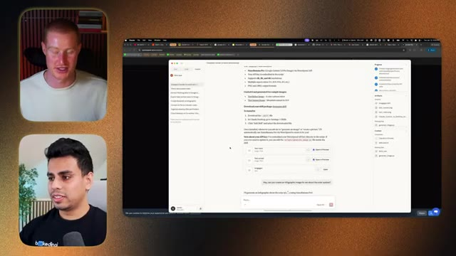
🔍 AgrandirExactement. Et c'est pourquoi, peut-être que je vais coller ça dedans, et c'est comme ça que je perçois plot code en ce moment, si vous voyez mon écran. Voyez, vous pouvez faire tellement de choses avec tellement d'outils, mais vous verrez des gens des deux côtés du spectre qui vont simplement utiliser plot code parce qu'une fois que vous comprenez que c'est tellement extensible et que vous pouvez faire tout ce que vous voulez avec parce que ça a accès partout comme une pieuvre, vous arrivez à n'utiliser qu'un seul outil et à annuler un million de vos abonnements.
Interface & Outils : Tableau blanc collaboratif Miro et navigateur web.
Contenu textuel & Code : Schéma avec des logos et du texte humoristique (Claude Code, Codex CLI, Gemini CLI, Cursor, Google Antigravity) et des graphiques de distribution de compétences.
Action / Démonstration : Le présentateur partage son écran et commente un diagramme humoristique illustrant différents outils et assistants d'IA.
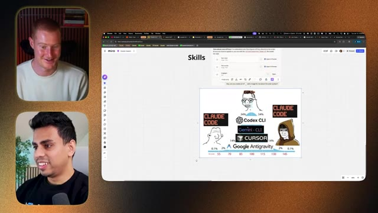
🔍 AgrandirC'est exact. Ouais, c'est fou. J'adore le fait qu'ils aient sorti Cloud Coworker. Ou enfin, je continue à l'appeler Cloud Coworker parce qu'on a vraiment l'impression que c'est un collègue. Mais Cloud Cowork, parce qu'avant Cloud Code, ça avait l'air trop technique, c'était juste difficile à manipuler, à mon avis. Je déteste fixer un terminal. Ça me donne juste envie de m'arracher les yeux.
Interface & Outils : Navigateur web affichant une application de tableau blanc collaboratif (Miro) et des flux vidéo de visioconférence.
Contenu textuel & Code : Schémas humoristiques avec des mèmes (wojak) et des étiquettes textuelles pour "CLAUDE CODE", "Codex CLI", "Gemini CLI", "CURSOR" et "Google Antigravity", ainsi qu'une zone de prompt en haut.
Action / Démonstration : Le présentateur commente le tableau blanc et discute des différents outils de codage et d'IA présentés graphiquement.
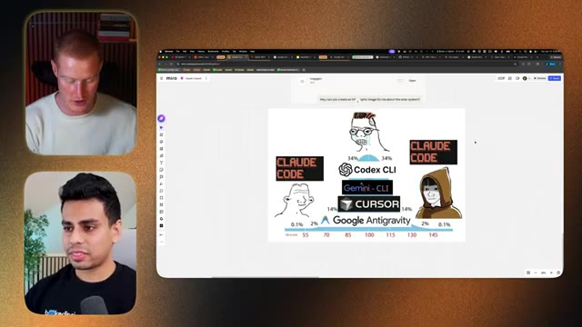
🔍 AgrandirDonc, avoir une interface comme celle-ci maintenant, si vous pouviez revenir à l'interface à l'intérieur de Cloud Cowork, j'adorerais voir juste, genre, ouais, exactement. C'est une façon super simple de regarder cela. Et puis nous n'avons pas vraiment abordé les artefacts non plus. Mais genre, par exemple, si nous extrayons des données de fichiers ou quelque chose, si nous avons un fichier CSV de quelque chose, nous pourrions alors dire, je veux que vous créiez un tableau de bord pour visualiser toutes ces informations, par exemple.
Interface & Outils : Navigateur web, application Miro, interface Cloud Cowork et visio-conférence.
Contenu textuel & Code : Interface utilisateur avec des options de sélection, des prompts textuels et une liste d'artefacts générés.
Action / Démonstration : Navigation et présentation des fonctionnalités de l'interface et des artefacts générés par l'IA.
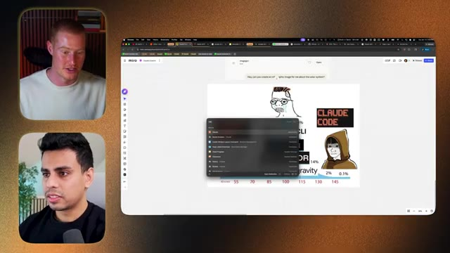
🔍 AgrandirEt il pouvait lancer dans VibeCode une véritable interface utilisateur pour que vous puissiez commencer à l'utiliser. C'est donc un peu, Claude Cowork combine Claude, Claude Code et en quelque sorte des artefacts pour pouvoir faire tout cela au sein d'un seul écosystème maintenant, ce qui est, vous savez, super simple à utiliser. Oui, c'est vraiment chouette. J'ai l'impression qu'on peut amener Claude Coworker et Code vers de tels sommets si on l'utilise simplement.
Interface & Outils : Interface web de type application d'intelligence artificielle (Claude / plateforme de développement) et tableau blanc Miro ou similaire.
Contenu textuel & Code : Historique de conversation textuelle, messages d'erreur liés à une API (erreur 429), liste d'artefacts dans le panneau latéral droit et affichage d'une image générée représentant un robot astronaute sympathique.
Action / Démonstration : Démonstration de l'utilisation d'un outil d'intelligence artificielle générative et de son panneau d'artefacts/aperçus intégrés.
C'est pour ça qu'ils ont littéralement juste créé trois onglets différents, Claude Code, Cowork, et ensuite Code. Et c'est fondamentalement la même chose. C'est juste pour, encore une fois, pour en revenir à cette chose, c'est pour trois types d'utilisateurs différents. C'est un peu comme une drogue douce, le bureau Claude vers le cloud cowork.
Interface & Outils : Navigateur web, application Miro, interface de visioconférence
Contenu textuel & Code : Interface utilisateur avec des onglets ("Chat", "Code", "Cowork") et des panneaux de discussion textuelle et de gestion de tâches.
Action / Démonstration : Présentation visuelle et discussion autour de différentes interfaces ou modes d'utilisation d'un outil d'IA.
Maintenant, vous faites des tâches vraiment cool et ensuite vous allez dans Cloud Code et elles coûtent toutes la même chose. Donc, ça ne fait aucune différence. C'est vrai. Donc, si vous êtes quelqu'un qui utilise Cloud Cowork maintenant, parce que son interface est tout simplement plus facile à utiliser pour les personnes non techniques. Est-ce que, jusqu'où cela vous mène ? Est-ce que ça vaut quand même la peine d'apprendre à utiliser Cloud Code ?
Interface & Outils : Tableau blanc Miro et fenêtres de visioconférence.
Contenu textuel & Code : Schéma explicatif comparant les outils Claude Desktop, Claude Cowork et Claude Code à l'évolution des Pokémon (Salamèche, Reptincel, Dracaufeu) avec le texte "What is the difference".
Action / Démonstration : Le présentateur et son invité discutent des différentes interfaces et versions de Claude en s'appuyant sur un visuel explicatif.
Je veux savoir ce que tu en penses. Évidemment, c'est sorti depuis un jour seulement. Donc peut-être que tu ne connais pas toutes les limites que, tu vois, ça a, mais genre d'après ta première impression en l'essayant, parce que tu l'as pas mal testé. Qu'est-ce que tu en penses ? Genre, est-ce que ça vaut toujours le coup d'apprendre du code pour le cloud ? Est-ce que c'est juste pour un type de personne très précis qui ne veut pas avoir à toucher un terminal ? Qu'est-ce que tu en penses ? Hum, je pense en fait que ça dépend de tes objectifs et de ce que tu fais, tu vois ? Donc par exemple, si ton travail consiste simplement à, disons, rédiger du contenu, alors utiliser simplement le bureau de cloud est techniquement suffisant. Alors que disons maintenant que tu, tu vois, tu vas sur différents onglets,
Interface & Outils : Présentation ou face-caméra explicatif du trader sans interface logicielle partagée.
Contenu textuel & Code : Explications orales des stratégies et mise en contexte méthodologique du marché.
Action / Démonstration : Explications face caméra et analyse conceptuelle des marchés.
vous commencez à toucher à des choses, alors vous voudrez peut-être commencer à utiliser CloudCode work. Mais la plupart des gens n'ont probablement même pas besoin de CloudCode parce que la plupart des gens font juste des tâches ponctuelles. Je pense que vous allez naturellement, au fur et à mesure de vos besoins, comme ils sont tous dans un seul package, gravir les échelons. CloudCode, ce que les gens font avec ça, c'est en fait juste principalement du coder. Et c'est pourquoi ils, c'était un peu comme un échec marketing au départ, mais je comprends la façon dont ils s'y prenaient parce que c'est un peu comme euh vous savez comme Tesla a fait leur voiture la plus chère en premier et ensuite ils en ont fait une un peu moins chère comme le Model X et ensuite ils ont fait comme le Model 3
Interface & Outils : Présentation ou face-caméra explicatif du trader sans interface logicielle partagée.
Contenu textuel & Code : Explications orales des stratégies et mise en contexte méthodologique du marché.
Action / Démonstration : Explications face caméra et analyse conceptuelle des marchés.
c'est un peu le même modèle que Claude suit où ils ont tout jeté contre le mur avec Claude Code et puis maintenant ils le rendent plus facile et plus accessible au fur et à mesure, c'est bien ça ? et corrige-moi si je me trompe mais les gens utilisent Claude Code pour des choses que Claude ou Anthropic n'avaient pas forcément prévues et donc maintenant ils font presque de la rétro-ingénierie sur ce que les utilisateurs de Claude Code font, comment pouvons-nous ensuite rendre cela plus accessible aux personnes qui ne savent pas coder par exemple, et j'ai l'impression que c'est ça Claude Co-work, c'est tu vois le caméléon en the l'occurrence, c'est le juste milieu parfait, c'est intéressant de voir comment
Interface & Outils : Présentation ou face-caméra explicatif du trader sans interface logicielle partagée.
Contenu textuel & Code : Explications orales des stratégies et mise en contexte méthodologique du marché.
Action / Démonstration : Explications face caméra et analyse conceptuelle des marchés.
ils ont en quelque sorte fait de la rétro-ingénierie de ce que les gens construisent avec, tu sais, pour les personnes qui utilisent cloud code mais qui ne l'utilisent pas pour coder, si tu vois ce que je veux dire, donc exactement oui, des tâches uniques et cloud code c'est du genre, tu sais, avoir des agents, plusieurs agents et des instances en parallèle qui tournent en arrière-plan. La plupart des gens n'ont pas du tout besoin de ça. Donc je suppose que ma dernière question pour cloud cowork est, est-ce qu'on pourrait avoir plusieurs tâches ou agents différents qui fonctionnent en même temps ? Absolument.
Interface & Outils : Tableau blanc Miro affiché sur un navigateur web, avec des vignettes vidéo des deux participants sur le côté gauche.
Contenu textuel & Code : Texte "What is the difference" et "how you use it", avec trois Pokémon illustrant l'évolution des outils : Charmander (Claude Desktop), Charmeleon (Claude Cowork), et Charizard (Claude Code).
Action / Démonstration : Le présentateur explique les différentes déclinaisons et niveaux de puissance des outils Claude en utilisant une analogie visuelle avec l'évolution de Pokémon.
Yeah. So that is, that's the same thing as like how you have multiple of these running. Um, what you want to do is right here, right here, you see in cloud cowork, you can just open up, They literally call it tasks. Yeah. So you have, you make a task, you make a directive, you hit go, you make another task, you make a directive, you hit go, and then you sit back and then you judge.
Interface & Outils : Tableau blanc Miro et interface de gestion de tâches / automatisation sur macOS.
Contenu textuel & Code : Liste de tâches textuelles, icônes d'automatisation, et interface de commande pour l'intelligence artificielle ou les agents virtuels.
Action / Démonstration : Navigation et sélection des tâches dans l'interface pour expliquer la gestion et l'exécution de processus multiples.
Ouais. Donc tu es en train de me dire que tu peux cliquer sur l'une de ces instructions préchargées. Tu pourrais préparer ta journée, aller de nouveau dans les suggestions. Les suggestions. Ouais, exactement. Tu pourrais cliquer sur préparer ta journée, puis aller, aller en haut à gauche à nouveau, créer une nouvelle tâche pendant que ça prépare ta journée. Ça traite aussi des données et ça crée aussi un prototype, tout ça. C'est fou de se dire qu'on peut simplement le lancer et qu'il fasse plusieurs choses différentes pour toi.
Interface & Outils : Navigateur web affichant une application de type chat/IA intégrée à un espace de travail, avec deux fenêtres de webcam.
Contenu textuel & Code : Instructions préchargées et suggestions visibles dans un panneau latéral de l'interface d'intelligence artificielle.
Action / Démonstration : Navigation et explication des fonctionnalités de suggestions et d'instructions préchargées dans l'application.
alors comme tu l'as dit tu vas chercher ton café ou tu sais tout ce dont tu as besoin de faire exactement ouais par exemple l'un d'eux s'occupe du suivi de tes réunions un autre s'occupe d'écrire ton emploi du temps et comme tu peux lui donner accès aux différentes instances de co-travail dans le cloud tu peux lui donner accès à différents connecteurs donc c'est un peu plus rapide quand il s'agit de faire ton travail ouais c'est logique euh je suppose que peut-être l'une de mes dernières questions ici c'est qu'une grande partie de mon audience a probablement utilisé quelque chose comme n8n est-ce que tu penses que cela pourrait remplacer le besoin pour beaucoup de gens d'utiliser n8n genre je sais que tu étais un utilisateur intensif est-ce que tu l'utilises encore tous les jours ou est-ce que
Interface & Outils : Application web Miro, navigateur web, fenêtres de visioconférence des intervenants.
Contenu textuel & Code : Liste de tâches textuelles, options de préparation de réunion ("What kind of prep?"), prompts de gestion d'agenda et d'e-mails.
Action / Démonstration : Présentation d'un outil de co-travail et d'automatisation des tâches pour la gestion du calendrier et des réunions.
maintenant en passant plus vers l'apprentissage de la compétence d'utiliser quelque chose comme Claude Code et Co-work dans vos flux de travail quotidiens, donc c'est un peu comme une épée à double tranchant, je pense que la plupart des gens vont lentement commencer à délaisser n8n, mais vous voyez juste ici, si vous allez dans les connecteurs, vous pouvez vous connecter au MCP de n8n, ouais, n8n a littéralement un MCP, donc vous pouvez simplement, vous savez, connecter ceci et ensuite dire : hé, collègue Claude, va me construire cette automatisation et ensuite il le fera.
Interface & Outils : Tableau blanc Miro et interface de configuration de flux de travail / connecteurs.
Contenu textuel & Code : Listes de tâches automatisées, prompts de préparation de réunion et icônes de connecteurs logiciels (Jira, Notion, GitHub, etc.).
Action / Démonstration : Navigation et présentation des outils de flux de travail et des connecteurs d'intégration logicielle.
Compris. Ouais, donc ça dépend de ce que vous essayez de faire et de quels sont vos objectifs. Personnellement, j'ai un peu éloigné mes trucs de N8N et je les code moi-même. Mais je ne pense pas que tout le monde sache coder ou ait même besoin de savoir coder. C'est donc un type de scénario différent. Ouais, tout à fait.
Interface & Outils : Claude Desktop, macOS, Miro
Contenu textuel & Code : Fenêtre modale "Connectors" listant diverses intégrations et outils connectables (comme GitHub, Jira, etc.) avec une barre de recherche.
Action / Démonstration : Navigation et présentation des options de connexion et d'intégration d'outils tiers au sein de l'application Claude.
Très bien, Salman, ça a été génial, mec. Je pense qu'on a vraiment montré aux gens les capacités de Claude Code et de Claude Cowork. Donc, si les gens aiment ce qu'ils ont entendu dans ce podcast et qu'ils veulent entrer en contact avec toi ou te suivre et en apprendre davantage grâce à toi, où peuvent-ils te trouver ? Oui, tout à fait. Donc, j'ai en fait ma propre chaîne YouTube où je publie beaucoup de contenu de type Claude.
Interface & Outils : Interface web de Zapier et fenêtre modale de sélection de connecteurs.
Contenu textuel & Code : Liste de connecteurs ou intégrations logicielles affichée dans une fenêtre modale sur fond sombre.
Action / Démonstration : Navigation et présentation des options de connexion et d'intégration d'applications tierces.
Et même, j'ai créé cette communauté. C'est si vous allez sur school.com slash Claude. Je n'arrive pas à croire que j'aie eu ça, mais j'en ai lancé une toute nouvelle sur la façon d'automatiser réellement les processus d'entreprise avec Claude Code ou Claude en général. Génial. Est-ce que c'est gratuit de s'inscrire en ce moment ? Oui, c'est gratuit de s'inscrire en ce moment. Alors allez-y. Posez-moi des questions parce qu'en ce moment, c'est juste, vous savez, explorer comment nous pouvons appliquer cette technologie pour dynamiser réellement notre travail.
Interface & Outils : Navigateur web affichant la plateforme communautaire Skool, YouTube et un tableau de bord API.
Contenu textuel & Code : Page de la communauté Skool "Claude Co-workers" avec des visuels explicatifs sur l'utilisation de Claude Code, Codex CLI, Cursor et des flux d'automatisation.
Action / Démonstration : Présentation à l'écran de la page Skool de la communauté créée pour l'automatisation avec Claude.
100 %. Et c'est pour ça que je voulais t'inviter. Donc je suis content qu'on ait pu le faire. Bien sûr, frangin. Ouais. Ravi d'être là, mec. Si vous avez trouvé ça utile, allez suivre Solomon, abonnez-vous à ma chaîne aussi. Cela dit, je vous remercie d'être restés jusqu'à la fin et on se voit dans la prochaine vidéo.
Interface & Outils : Navigateur Web Google Chrome affichant YouTube.
Contenu textuel & Code : Page de la chaîne YouTube de Samin Yasar avec miniatures de vidéos et bannières promotionnelles.
Action / Démonstration : Présentation de la chaîne YouTube de l'invité en fin d'épisode.